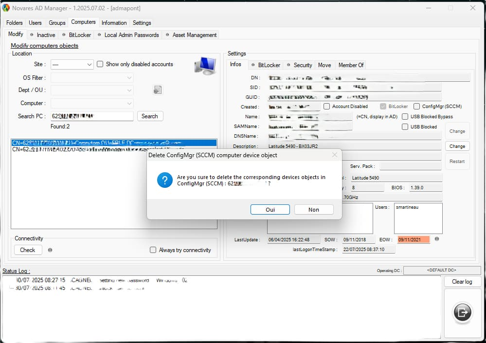
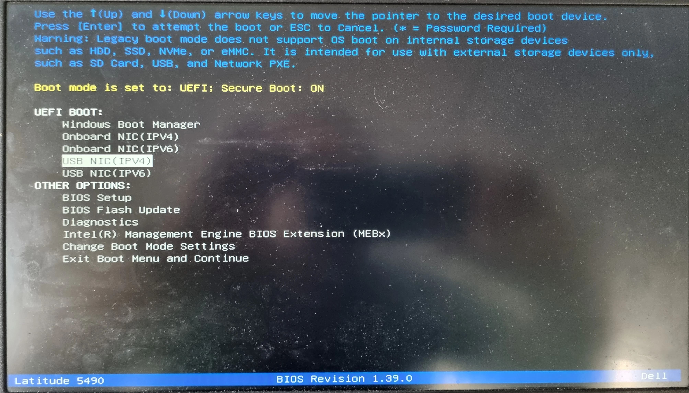
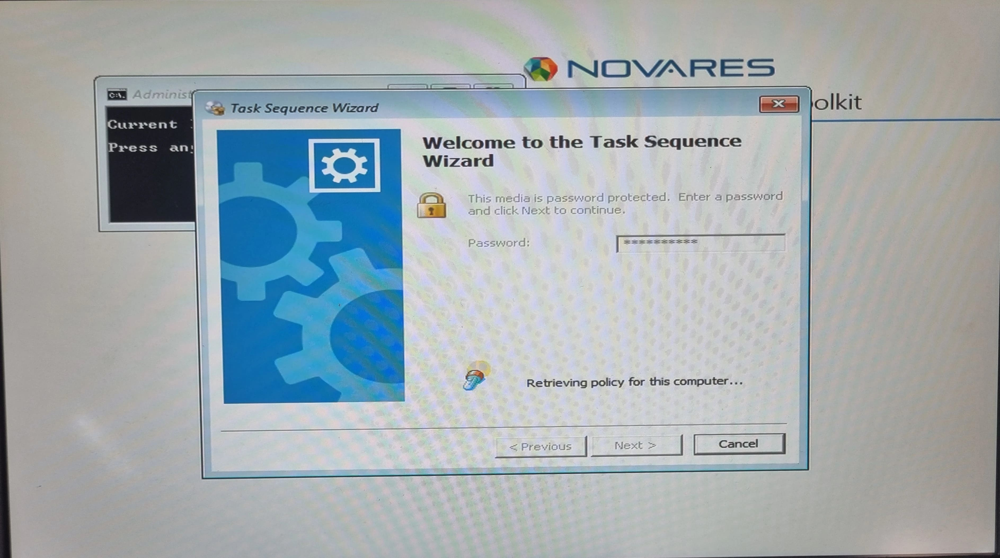
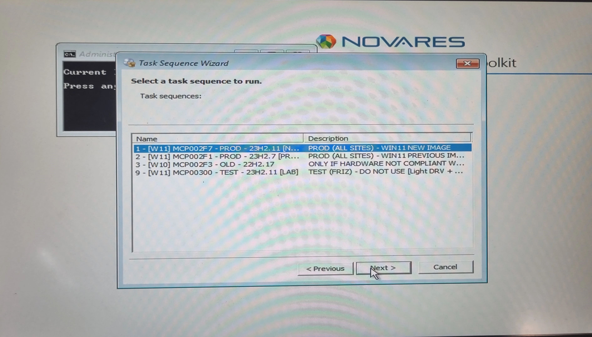
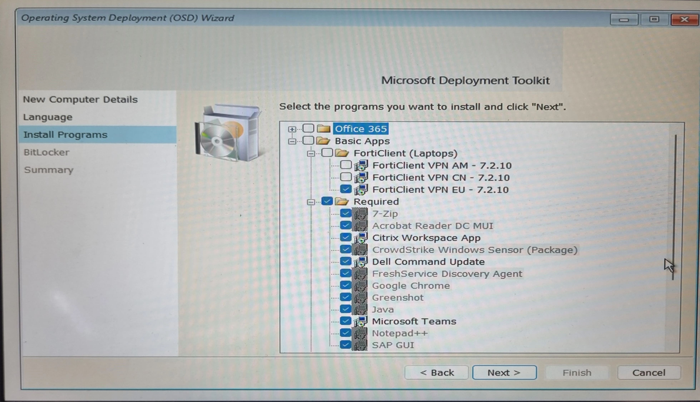
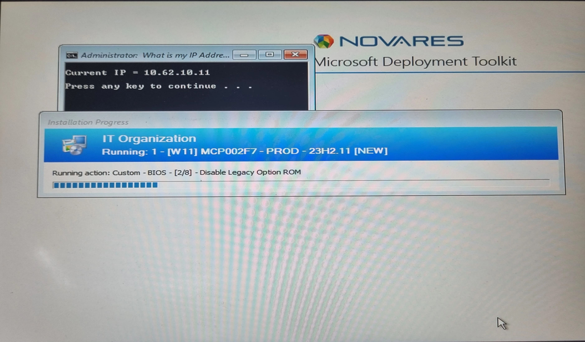

📋 Contexte de la procédure
Cette procédure décrit les étapes de déploiement d'applications et de mises à jour via SCCM (System Center Configuration Manager) dans l'environnement Novares.
🏢 Centre de Gestion
Serveur SCCM Principal
🌐 Points de Distribution
Répartition des contenus
💻 Clients
Postes utilisateurs
🎯 Objectif : Cette procédure permet de déployer des applications, mises à jour et correctifs de manière centralisée sur l'ensemble du parc informatique.
⚙️ Procédure de déploiement SCCM
1
Préparation du déploiement
Retirer le computeur du SCCM.

🔧 Console d'administration Novares AD MANAGER
2
Configuration Boot UEFI
Choisir le BOOT UEFI.

💻 Configuration BIOS - Boot UEFI
Onboard NIC: câble réseau
USB NIC: câble USB-C du dock
3
Authentification administrateur
Validation de l'identité via le système de mot de passe.

🔐 Validation Administrateur requise
Cette couche de sécurité supplémentaire garantit que seuls les administrateurs autorisés peuvent accéder à la console SCCM.
4
Sélection de l'image
Sélection de l'image à déployer.

📊 Sélection de l'image de déploiement
💡 Information : SCCM permet de gérer centralisément le déploiement d'applications, mises à jour et paramètres sur l'ensemble des postes clients.
5
Configuration de l'application
Gestion des applications et programmes dans la console SCCM et configurer les propriétés.

➡️ Configuration des applications et programmes
Nom: Utilisateur ou SPARE
Langue du PC: français
Programme: Office365, Forticlient, les requis
Bitlocker: protection des données
6
Lancement du déploiement
Initialisation du processus de déploiement.

⌨️ Processus de déploiement en cours
7
Surveillance du déploiement
Surveiller l'état du déploiement dans la console SCCM.

📊 Surveillance et monitoring du déploiement
🎯 Validation : Vérifier que le contenu a été correctement distribué à tous les points de distribution.
États de déploiement :
✅ Succès❌ En échec
📝 Points de contrôle essentiels
✅ Sources : Fichiers sources accessibles et complets
✅ Paramètres : Configuration de déploiement correcte
✅ Cibles : Collections appropriées sélectionnées
✅ Distribution : Contenu distribué sur tous les points de distribution
✅ Surveillance : État du déploiement surveillé et problèmes résolus